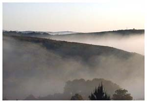
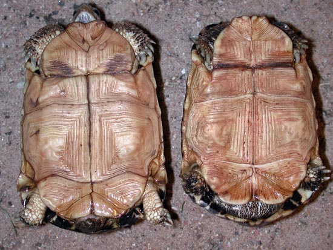
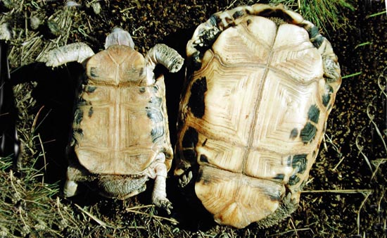
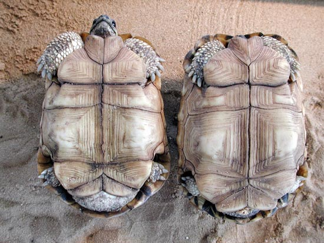
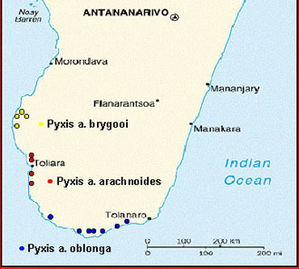
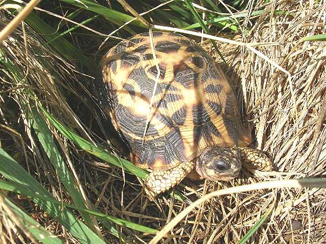
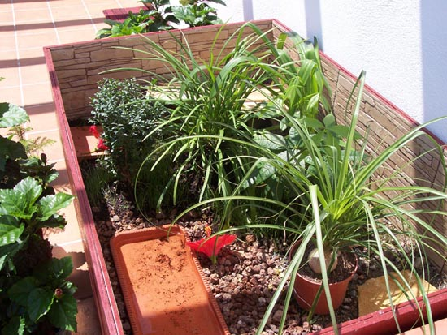
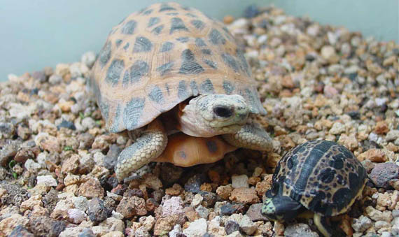

|
MANTENIMIENTO Y CRIANZA DE PYXIS ARACHNOIDES
Fernando P�rez, 2004
|
1 - Origen y
h�bitat.
2 - Subespecies.
3 - Mantenimiento en cautividad.
4 - Alojamiento.
5- Alimentaci�n.
6 - Puesta e incubaci�n.
7 - Legislaci�n. |
 |
1. ORIGEN Y H�BITAT
Pyxis arachnoides, la tortuga ara�a malgache, es una tortuga terrestre
originaria de la costa sur de Madagascar. Para algunos autores Pyxis
es un g�nero monot�pico end�mico de Madagascar, mientras que para
otros cuenta con una segunda especie, Pyxis planicauda. Sin embargo
para otros autores esta segunda especie estar�a incluida en el g�nero
Acinixys.
Pyxis arachnoides es una tortuga de peque�o tama�o, que alcanza un
tama�o adulto de 10-15 cm. de longitud de caparaz�n, dependiendo de
cada subespecie como veremos m�s adelante. El caparaz�n es muy
abombado y los escudos marginales no est�n serrados. Sobre los escudos
dorsales y vertebrales aparece un dibujo pardo oscuro a base de puntos
o rayas ligeramente estrelladas. Los escudos marginales tienen en el
centro una mancha grande de color pardo oscuro, o una �nica raya sin
dibujo. En el centro, el color de los escudos puede llegar a ser verde
amarillento. En el plastr�n se distinguen dos l�bulos, anterior y
posterior. El l�bulo anterior es m�s grande, pero a la vez m�s
estrecho que el posterior, y est�n unidos por una bisagra entre los
escudos femorales y pectorales. La parte anterior del plastr�n es
m�vil a excepci�n de una de las tres subespecies existentes.
La Pyxis arachnoides habita en bosques tropicales de hoja caduca y en
bosques y estepas arbustivas secas.
2. SUBESPECIES
Se reconocen tres subespecies: Pyxis arachnoides arachnoides,
Pyxis arachnoides Oblonga y Pyxis arachnoides brygooi.
�
Pyxis arachnoides arachnoides: Tiene su h�bitat natural en la
costa suroeste de Madagascar, en las inmediaciones del r�o Onilahy. El
tama�o m�ximo adulto es de 15-16 cm. y de 500 gramos aproximadamente
tanto machos como hembras. Como se ha indicado anteriormente, estos
ejemplares poseen el l�bulo anterior del plastr�n m�vil, esto quiere
decir que cuando la tortuga guarda la cabeza, el plastr�n, de
tonalidad amarilla, cierra el espacio existente entre el caparaz�n y
�ste, al igual que las tortugas de caja.

Plastr�n de P.a.arachnoides. Sin marcas en el plastr�n y con l�bulo
anterior m�vil (Rolf Stein).
�
Pyxis arachnoides oblonga: Al igual que la especie nominal, esta
subespecie alcanza como tama�o m�ximo los 15-16 cm., situ�ndose tambi�n
su peso m�ximo entorno a los 500 gramos. Tiene tambi�n el l�bulo del
plastr�n m�vil, pero adem�s y a excepci�n de sus primas tiene la
particularidad de tener el plastr�n lleno de manchas negras. Habita en
la zona m�s al sur de la isla de Madagascar.

Plastr�n de P.a.oblonga. V�anse las
marcas del plastr�n y el l�bulo anterior m�vil (Rolf Stein).
�
Pyxis arachnoides brygooi: La m�s peque�a de las Pyxis y la
habitante m�s al oeste de la isla malgache, la arachnoides brygooi
tiene como tama�o adulto 12 � 13 cm. como m�ximo, no excediendo su peso
total los 400 gramos aproximadamente. Esta subespecie tiene el
plastr�n totalmente r�gido y amarillo sin manchas, no hay ninguna
parte m�vil.

Plastr�n de P.a.brygooi. Sin marcas
en el plastr�n ni l�bulo anterior m�vil (Rolf Stein).
3.
SUBESPECIES DE PYXIS ARACHNOIDES EN MADAGASCAR
|
 |
ARACHNOIDES
BRYGOOI
ARACHNOIDES
ARACHNOIDES
ARACHNOIDES
OBLONGA
|
4.
MANTENIMIENTO EN CAUTIVIDAD
Esta singular especie se caracteriza por la estivaci�n que realiza
durante la �poca seca en su h�bitat natural, este periodo de tiempo
que abarca desde el mes de Diciembre hasta finales de Marzo
coincide con la hibernaci�n que realizan la mayor�a de las Tortugas
Mediterr�neas y que tanto conocemos. Como podemos observar en el
cuadro inferior, las temperaturas altas se inician en Diciembre,
predominando un ambiente con una humedad baja, alrededor del 50%
(seco). Condiciones ambientales que causan una inactividad casi total
durante estos meses en los ejemplares de esta especie y que los
mantienen ocultos en madrigueras y escondites, de los que salen pocas
veces de ellos para alimentarse. El fotoperiodo de luz predominante en
esta �poca del a�o debe mantenerse alrededor de 9 horas, aumentando
paulatinamente hasta Abril/Mayo y situ�ndose cerca de las 14 horas de
luz diurna. Durante este periodo la temperatura ideal en terrario de
interior oscila entre los 15 y 25�C.
�
Clima en Tamatave, Madagascar.
| |
ENE |
FEB |
MAR |
ABR |
MAY |
JUN |
JUL |
AGO |
SEP |
OCT |
NOV |
DIC |
MEDIA |
Temp.
Max.C |
30 |
30 |
29 |
28 |
27 |
25 |
24 |
24 |
26 |
27 |
29 |
29 |
27 |
Temp.
Min.C |
23 |
23 |
23 |
22 |
21 |
19 |
18 |
18 |
18 |
19 |
21 |
23 |
21 |
|
Lluvia
(mm) |
336 |
376 |
452 |
399 |
264 |
282 |
302 |
203 |
132 |
99 |
117 |
262 |
3254 |
El
sur de Madagascar goza de un clima sumamente �rido, el litoral
malgache disfruta de una temperatura media de 21-27�C. La pluviosidad
en esta zona es de 355mm. Los ciclones del Oc�ano Indico traen lluvias
torrenciales e inundaciones. (Revista Reptilia n�42).
Desde Mayo hasta Noviembre las temperaturas ideales se sit�an entre
los 28 y 33�C. En estos meses la higrometr�a en su lugar de origen es
muy alta, alrededor del 90%, incluso es aconsejable en terrarios de
interior inundarlos parcialmente para obtener el efecto deseado. Es en
esta �poca y durante el aumento de humedad comienzan los acoplamientos
y cortejos entre ejemplares de distinto sexo, volvi�ndose muy activos
durante este periodo y aliment�ndose considerablemente. El fotoperiodo
se sit�a en 14 horas aproximadas desde el mes de Mayo para ir
disminuyendo hacia un m�nimo en Noviembre/Diciembre de 9 horas de luz
diurna.

Pyxis arachnoides arachnoides (Fernando P�rez).
� Alimentaci�n.
Las Pyxis como la mayor�a de tortugas terrestres se alimentan con una
dieta rica en fibra y baja en prote�na, una alimentaci�n basada en
diente de le�n, llant�n, escarola, achicoria, cerraja, tr�bol, endibia,
col china, morera, hojas de parra y de malva etc.
Complementaciones de vitaminas mensualmente y calcio dos veces por
semana.
�
Alojamiento.
La Pyxis arachnoides es una tortuga delicada para mantenerla en
exterior, en nuestro pa�s ser� dif�cil mantener una humedad tan alta
en recintos exteriores en los meses de verano, recordemos que
necesitan de un 90% de humedad en el alojamiento que dispongamos para
su estancia. Nuestra �poca estival seca y con temperaturas muy altas
pueden afectar enormemente la salud del animal por lo que es
aconsejable su mantenimiento en interior. Las zonas costeras de
nuestra pen�nsula con temperaturas m�s suaves e �ndice de humedad m�s
alto pueden ser lugares aptos para esta especie, siempre vigilando
rangos de temperatura y ayudando con riegos abundantes a establecer
una humedad alta.
En la temporada seca, que coincide con el oto�o e invierno en nuestro
pa�s, no cabe duda que el alojamiento para Pyxis debe ser en interior.

Alojamiento de exterior para una pareja de Pyxis arachnoides (Fernando
P�rez).
Aparte del tubo de espectro completo y de un foco calor�fico �spot�
para la zona caliente del alojamiento, el terrario deber� incluir un
recipiente donde haya agua de manera permanente, ya que estas tortugas
se suelen ba�ar a diario. Cabe destacar que el recipiente de agua
deber� ser cambiado tambi�n diariamente para evitar contagios
inoportunos.
El substrato a utilizar puede ser variado, es bueno una combinaci�n de
mantillo, arena y grava menuda, dejando bajo el foco calor�fico una
piedra plana de pizarra que se caliente y al que las tortugas gustar�n
de utilizar.
�
Puesta e Incubaci�n.
El periodo de puesta comienza en Agosto extendi�ndose hasta Diciembre,
periodo de m�xima humedad en su h�bitat natural. La puesta suele ser
un huevo �nicamente, pero puede haber hasta tres y cuatro puestas en
este transcurso de tiempo. No es aconsejable dejar que el animal haga
demasiadas puestas y hay que evitar tambi�n en esta �poca que coman
demasiado alimento.
C�pula y puesta (Michael Notarianni).
La
incubaci�n dura entre 8 y 14 meses. De hecho, la embriog�nesis empieza
antes de los �ltimos cuatro meses de la incubaci�n, por lo tanto el
huevo sigue estando estable durante todo el periodo de la estaci�n
seca. El desarrollo del embri�n empieza con el aumento de la
higrometr�a.
El proceso del nacimiento (Michael Notarianni).
Pyxis arachnoides es una especie dif�cil a la hora de conseguir
reproducirla en cautividad, en Centroeuropa existen distintos
criadores que han conseguido su crianza con �xito, entre ellos Michael
Notarianni que se ha brindado gustosamente para la realizaci�n de este
art�culo as� como para incluir diversas im�genes de los ejemplares que
posee.

Madre e hija (Michael Notarianni).
7. LEGISLACI�N
Pyxis arachnoides estaba incluida en el Ap�ndice II del C.I.T.E.S
hasta la Conferencia celebrada en Bangkok (Tailandia) del 2 al 14 de
octubre de 2004, en la que pas� al Ap�ndice I.
|